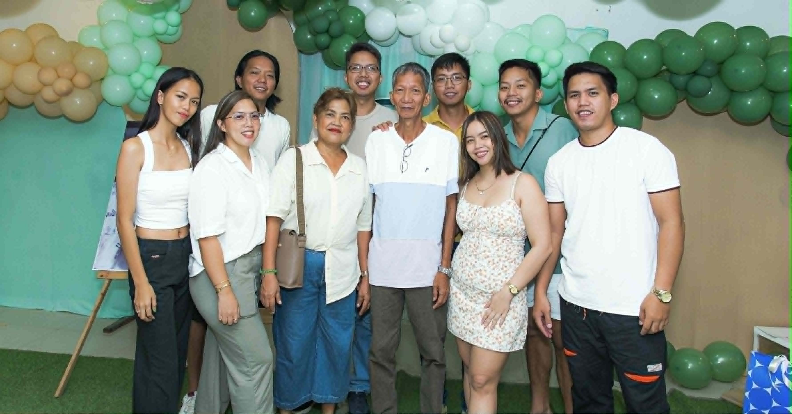
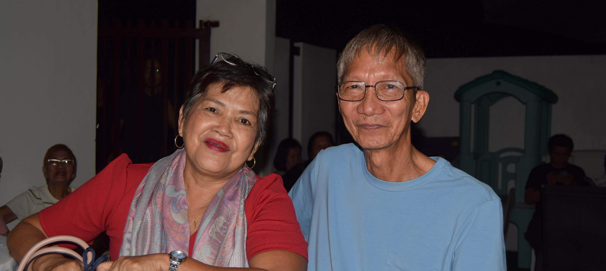
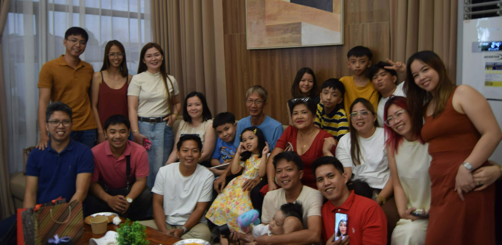
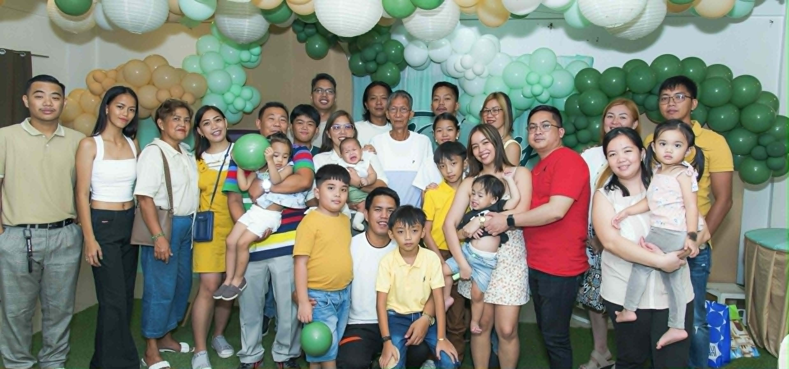

My Family





My parents have been married for 40 years and have built a strong and
loving family of eight children, consisting of five boys and
three girls. I am the youngest in my family, which has given me
the unique experience of growing up surrounded by older siblings
who have each played an important role in shaping my values,
personality, and outlook on life.
Over time, all of my brothers and sisters have grown into their
own lives and are now in relationships or have partners of their
own. This has expanded our family further, and I am now proud
to be an aunt to six nephews and two nieces.
Being part of a large, close-knit family has taught me
the importance of connection, support, and togetherness,
and it continues to be a meaningful part of who I am.
A fun fact about my family is that all of my siblings’ names begin with
the letter “B,” while my name is the only one that starts with a different
letter, “V,” which makes me stand out as the youngest in a unique way.